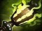

Meat Hook — крюк
Бросает крюк, который притягивает попавшегося врага или существо. Используй из тумана войны или когда враг занят дракой.

Универсальный герой — позиции: 2, 3, 4
инициатор, контроль, убийство отдельных целей
попадать крюком, ловить одиноких врагов, создавать пространство для команды и мешать противникам спокойно фармить
добивай крипов с руки и используй Rot для зачистки, если хватает здоровья. Не стой в кустах всю игру в ожидании крюка — перемещайся по карте и помогай команде
Бросает крюк, который притягивает попавшегося врага или существо. Используй из тумана войны или когда враг занят дракой.
Наносит урон вокруг Пуджа и замедляет врагов, но также наносит урон самому герою. Следи за здоровьем.
Даёт дополнительную силу и помогает становиться выносливее. Точный эффект и расположение способности зависят от версии игры.
Удерживает врага и наносит ему урон. Применяй после удачного крюка или когда противник не может быстро прервать способность.


